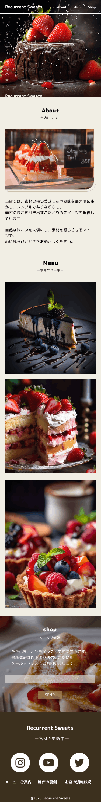

| 概要 | 個人制作の仮想WEBサイト |
|---|---|
| 作品名 | リカレントスイーツ |
| ターゲット | 10代〜30代の女性 |
| 担当範囲 | 企画/デザイン/コーディング |
| 制作期間・制作完了日 | 企画…6時間/デザイン…16時間/コーディング…20時間・2026年3月28日 |
| 使用ツール | Figma/HTML/CSS/Vanilla JavaScript |
| 工夫・サイト設計 | デザイン面では、「優しい甘さと旬の香り」というコンセプトをもとに、全体をナチュラルで柔らかい印象に統一しました。
ベースカラーにはベージュ系（#f1eee4）を使用し、スイーツの優しさや温かみを表現しています。アクセントカラーにはブラウン系（#a98c5f）を使用し、落ち着きと上品さを持たせました。
また世界観の構築のためフォントには、女性が親しみやすく、かつ『手作りの温かみ』を感じてもらえるよう、手書き風の『Yomogi』と丸みのある『M PLUS Rounded 1c』を組み合わせました。
キャッチコピーを縦書きに配置することで、デザイン性を維持しつつ視線を集めるアクセントとして機能させました。 ナビゲーションはシンプルな構成にし、ユーザーが迷わず目的の情報へアクセスできるように設計しました。また、メニューはスライダー形式で表示し、視覚的に楽しみながら商品を閲覧できるよう工夫しています。 コーディング面では、スマートフォンでの閲覧を考慮し、スマフォファーストでコーディングし、clamp()関数でフォントサイズを設定し、デバイスごとに自然に変わるようにしました。 スクロールイベントを用いたアニメーションを実装し、コンテンツが順次現れる演出を加えました。これにより、ページを読み進める楽しさを演出し、サイトの滞在時間を向上させる工夫をしています。 スライド部分はSplideを使用し、軽量かつカスタマイズ性の高いライブラリを選びました。必要な機能のみを使用することで、読み込み速度の向上にも配慮しています。 SNS流入も意識し、OGPを設定しました。Xでは大きく表示されるsummary_large_imageを採用し、ユーザーの視認性とクリック率の向上を意識しています。制作して終わりではなく、公開後の運用や集客まで考慮した実装を心がけました。 |
| ソースコード | https//wwwwwwwwwwwwwwwwwwwwwwwwwwww |
